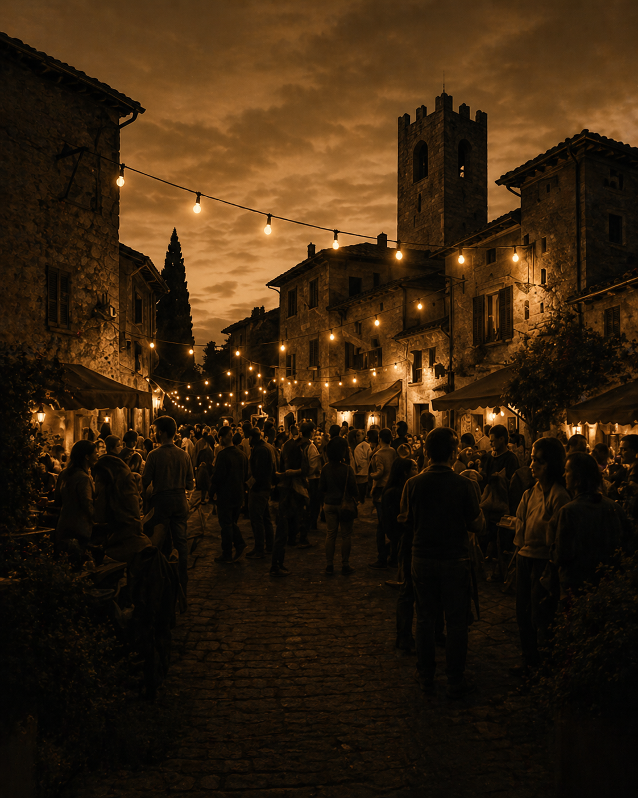

Luci sul Lago
15 LUGLIO 2025
Una serata tra riflessi, musica e scorci sul lago.
Storie da vivere
15 LUGLIO 2025
Una serata tra riflessi, musica e scorci sul lago.

21–23 GIUGNO 2025
Tre giorni di musica, sapori e tradizioni nel cuore del borgo antico.

12 LUGLIO 2025
Percorsi panoramici e degustazioni tra i borghi del territorio.
Orari degli eventi principali
Subiaco